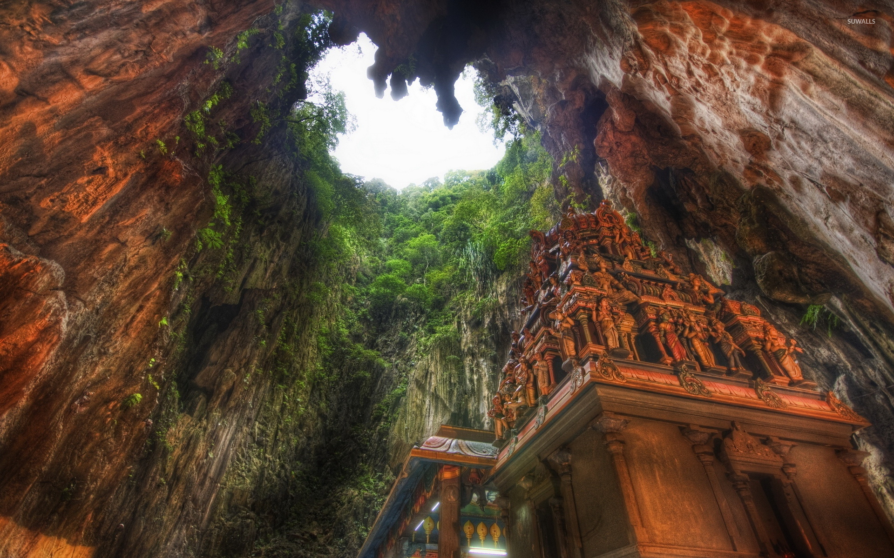
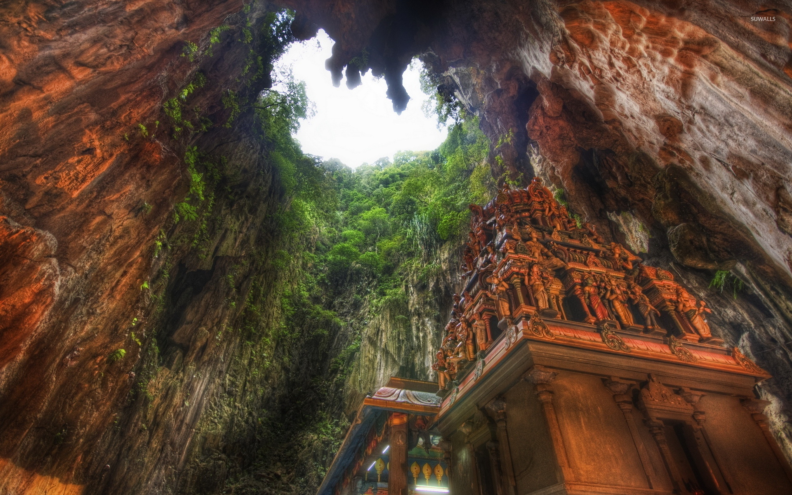
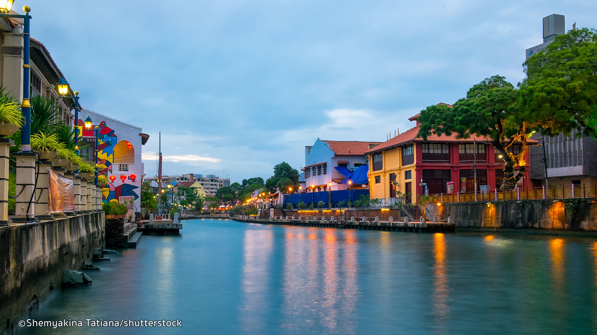

La Malaisie est un pays d'Asie du Sud-Est occupant une partie de la péninsule Malaise et de l'île de Bornéo. Elle est réputée pour ses plages, ses forêts tropicales et ses influences culturelles malaises, chinoises, indiennes et européennes. Kuala Lumpur, la capitale, abrite des bâtiments coloniaux, des quartiers commerçants tels que Bukit Bintang et des gratte-ciel comme les emblématiques tours jumelles Petronas de 451 mètres de haut.
La Malaisie
Villes incontournables
Kuala Lumpur
 

Kuala Lumpur sera certainement votre porte d’entrée en Malaisie. Avec près de deux millions d’habitants, la grande capitale malaysienne propose un mélange singulier et parfois étonnant, entre modernité et tradition. Commencez votre découverte par les tours Petronas, fiertés nationales, s’élevant à 451 mètres de hauteur sur 88 étages, qui furent un temps les plus hautes tours du monde. Faites ensuite un arrêt à la tour de communication KL, aussi appelée la tour Menara et admirez la vue imprenable sur la ville, depuis une plateforme située à plus de 276 mètres du sol.
Prenez le temps de flâner dans le charmant quartier de Kampung Baru et dans les rues trépidantes de Little India et Chinatown. Vous souhaitez rapporter quelques souvenirs dans vos valises ? Direction la célèbre rue Jalan Bukit Bintang. Vous pourrez y faire du shopping, y manger un morceau, mais aussi profiter, à la nuit tombée, de l’ambiance festive du quartier.
L'archipel de Langkawi
Langkawi est un archipel malaisien d’une centaine d’îles situé à l’extrême nord-ouest du pays, à 25 km de la frontière thaïlandaise. Couvrant au total 500 km², soit cinq fois Paris intra-muros, il porte le nom de son île principale, de loin la plus grande (320 km2), où se concentre la population et les voyageurs.
Plus connue et fréquentée que Tioman ou les Perhentians, l’île de Langkawi, située dans la mer d’Andaman, offre à ses visiteurs un environnement naturel exceptionnel. Sable blanc, cocotiers, et nature luxuriante invitent à la détente et la contemplation.
Ne soyez pas surpris si, au détour de vos balades sur la plage, vous rencontrez un varan, un macaque nageur ou une loutre de mer. Classé comme géoparc par l’Unesco, Langkawi regorge en effet d’une faune et d’une flore exceptionnelle. L’île est aussi connue pour son immense pont suspendu et son impressionnant cable car.
Malacca
Classée par l’Unesco au Patrimoine mondial de l’humanité, la « Venise d’Asie » est considérée comme l’une des plus belles villes à visiter en Malaisie. Baladez-vous dans les ruelles de Malacca et découvrez les multiples influences coloniales qui ont marqué la plus vieille ville portuaire du pays.
Pour mieux comprendre les différentes influences religieuses qui caractérisent la Malaisie, faites une halte aux trois principaux édifices religieux de la ville, la mosquée Kampung Kling, le temple Cheng Hoon Teng et l’église du Christ. Terminez la visite de Malacca par son night market et admirez le coucher du soleil sur la mosquée flottante Masjid Selat. Un paysage éblouissant, digne des contes des Mille et une nuits.
Lieux Emblématiques

Les Cameron Highlands
Si vous recherchez un peu de fraîcheur, prenez la direction des Cameron Highlands. Ces hauts plateaux, où l’on cultive le thé, se situent à plus de 1 400 mètres d’altitude. La région, d’un vert émeraude, offre des paysages à couper le souffle sur les plantations de thé, ainsi que de nombreuses activités, qui raviront les grands et les petits. N’hésitez pas à partir en trek dans la mossy Forest ou à déguster une tasse de thé Boh, le thé le plus populaire de Malaisie, cultivé sur les terres des Cameron Highlands depuis plus de cent trente ans.

Le Mont Kinabalu
Maison des esprits, plus haute montagne de Malaisie, ce rocher de granit dominant le nord de Bornéo a épuisé nombre de ceux qui se sont attaqués à lui. Le mont Kinabalu (Gunung Kinabalu) est aussi l’un des sites touristiques les plus populaires de Bornéo. Rassurez-vous, vous pourrez profiter de moments de tranquillité absolue, respirer un air incomparable et, avec de la chance, apercevoir les Philippines se dessinant à l’horizon. Si le temps est couvert, l’ascension n’en sera pas moins enivrante.

Pulau Perhentian
Les îles de l’est de la Malaisie péninsulaire permettent un grand nombre d’activités sous-marines, mais Pulau Perhentian remporte la palme lorsqu’il s’agit du snorkeling. D’un bleu céleste, les eaux limpides recèlent un éventail extraordinaire de créatures marines. La plupart du temps, il n’est pas nécessaire de nager beaucoup plus loin que la jetée de Long Beach avant de se retrouver au milieu d’un nuage multicolore de poissons de tailles et de formes diverses.

Les Grottes de Batu
Ce lieu sacré hindou est toujours très animé et coloré, mais, si vous en avez la possibilité, le mieux est de le visiter lors d’une fête religieuse. La plus importante est Thaipusam, qui voit des centaines de milliers de pèlerins converger vers cette immense formation rocheuse à quelques kilomètres au nord de Kuala Lumpur. Gardant l’accès des 272 marches menant au temple principal, la statue dorée de Murugan, haute de 43 m, sert de perchoir à un groupe de macaques remuants, qui n’hésitent pas à détrousser les touristes.
Georgetown
Situé sur l’île de Penang et inscrit par l’Unesco sur la liste du patrimoine mondial, Georgetown est un lieu incontournable à visiter en Malaisie. Considérée comme la capitale culinaire du pays, la ville possède une architecture surprenante, marquée par les différentes colonisations, ainsi que par l’influence de la culture chinoise. Véritable ville-galerie, les murs de Georgetown regorgent de graffiti et oeuvres en tout genre. Le quartier abrite également le temple Khoo Kongsi,classé au au patrimoine mondial de l’UNESCO. Si vous souhaitez vous aventurer au delà du mythique quartier, vous pourrez également prolonger votre visite sur l’île de Penang et découvrir les nombreux temples bouddhistes, vous baladez au jardin botanique de l’île ou admirer la vue incroyable sur la jungle et la ville depuis la colline de Penang.

Le parc national de Gunung Mulu
Vous recherchez un des plus beaux parcs nationaux à visiter en Malaisie ? Optez pour le parc de Gunung Mulu. Situé au beau milieu de la jungle de Bornéo, l’accès y est uniquement possible par les airs. La biodiversité de parc est exceptionnelle, puisqu’il abrite plus de trois mille cent cinq espèces de plantes différentes. Inscrit au patrimoine mondial de l’Unesco depuis l’an 2 000, le parc national de Gunung Mulu offre à ses visiteurs des paysages fascinants, composés de pinacles de calcaire et de grottes gigantesques. Ces dernières accueillent notamment des millions de chauves-souris et salanganes des cavernes qui, au crépuscule, s’envolent par nuées vers la jungle. Un moment magique à ne surtout pas rater !
Kuala Selangor
Un bel endroit à visiter en Malaisie en famille ? Kuala Selangor est la destination idéale. À seulement une heure de route de Kuala Lumpur, vous embarquerez pour une balade le long du fleuve Selangor, afin d’admirer les milliers de lucioles qui scintillent dans la nuit à travers la mangrove. Une expérience féerique qui ravira toute la famille.
Grille tarifaire de notre partenaire
| Services | Formule Basique | Formule Privilège | Formule Premium |
|---|---|---|---|
| 2 semaines en hôtel 5 étoiles | Oui | Oui | Oui |
| Petit déjeuner | Oui | Oui | Oui |
| Pension complète | Oui | Oui | Oui |
| Vol inclus | Non | Oui | Oui |
| Accès illimité au SPA privé | Non | Non | Oui |
| 5h de plongée OFFFERTE | Non | Non | Oui |
| Tarif TTC | 659,00€ | 989,00€ | 1 100,00€ |